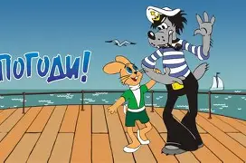

Nu, pogodi! (in Russian: «Ну, погоди!» which translates to “Well, Just You Wait!”)
is one of the most beloved and iconic Soviet animated series. It first appeared in 1969, created at Soyuzmultfilm studio, and ran through several decades, with episodes being released sporadically until the 2000s. The show is centered on the comedic rivalry between two main characters: the mischievous Wolf and the clever, good-natured Hare. The dynamic is often compared to “Tom and Jerry,” since the Wolf is constantly trying to catch the Hare, but his plans always backfire, leading to slapstick humor and comic failure. The Hare, unlike Jerry, is portrayed as polite, cheerful, and usually not actively taunting the Wolf, but he always manages to escape or turn the situation to his advantage. One of the reasons the series became so popular was its blend of humor, music, and social atmosphere. It often included satirical glimpses of Soviet urban life, with scenes set in parks, beaches, construction sites, and public transportation. The Wolf became a particularly memorable character, voiced by actor Anatoli Papanov, who gave him a gruff yet comically expressive personality. The Hare was voiced by Klara Rumyanova, whose high-pitched voice fit the character’s light and youthful nature. The phrase “Nu, pogodi!” shouted by the Wolf after failing yet again to catch the Hare, became a cultural catchphrase across the Soviet Union and remains recognizable to many in post-Soviet countries today. Even though it was clearly modeled on the chase-cartoon formula, it had its own distinct Soviet flavor, making it a nostalgic piece of childhood for several generations.
